본 포스트는 서울대학교 GSDS Sanghack Lee 교수님의 Causal Inference 강의 자료 Linear Structural Causal Models 편을 바탕으로, 강의를 처음 듣는 독자도 논리적 흐름을 따라갈 수 있도록 재구성한 것입니다. 이론적 원전은 Judea Pearl의 Causality: Models, Reasoning and Inference (2003)이며, 경로 규칙은 Sewall Wright(1921), 조건부 IV는 Brito & Pearl(2002), 도구집합의 알고리즘화는 Kumor, Chen & Bareinboim(2019), 그리고 부록의 복잡도 논의는 García-Puente et al.(UAI 2010)과 Dörfler et al.(NeurIPS 2024)의 계보를 따릅니다.
한 줄 요약 (TL;DR)
“구조 함수를 선형으로 가정하는 순간 인과추론은 ’관측 공분산 \(\sigma\)로 구조계수 \(\lambda\)를 풀 수 있는가’라는 연립방정식 문제가 되고, 그 풀이 가능성은 그래프만 보고 판정할 수 있습니다.”
앞선 강의들이 비모수 SCM 위에서 do-계산법이라는 무거운 도구로 식별을 다뤘다면, 이번 강의는 구조 함수 \(f_i\)가 선형이라는 가정 하나를 추가합니다. 그 대가로 얻는 것이 Wright의 경로 규칙(1921) 입니다. 두 변수의 공분산이 그래프 위 트렉(trek)을 따라간 계수 곱들의 합으로 분해되므로, 관측 가능한 \(\sigma_{ij}\)와 미지의 \((\lambda, \varepsilon)\) 사이에 다항 연립방정식이 세워집니다.
이 관점은 회귀에 대한 오래된 혼동도 정리해 줍니다. 최소제곱을 기호적으로 풀면 \(\beta = \sigma_{xy}\) — 회귀계수는 그저 공분산일 뿐이며, 그것이 구조계수와 같아지는 것은 그래프가 허락할 때뿐입니다. 언제 허락되는지를 규정한 것이 단일문 기준(직접효과)과 뒷문 기준(총효과)입니다.
회귀로도 안 될 때는 방정식을 푸는 방법 자체를 바꿉니다. 도구변수(IV) → 조건부 IV → 도구집합(Instrumental Sets) 으로 나아가는 이 흐름의 핵심은, “풀 수 있는 부분 체계”를 최대유량(max-flow) 같은 그래프 알고리즘으로 효율적으로 찾아내는 것입니다. 그래서 선형 식별성은 식별 가능 / 유한 식별 / 식별 불가의 세 경우로 갈립니다.
마지막으로 부록은 정직한 한계를 남깁니다. 그래프 기준들은 다항시간이지만 불완전하고, 모든 경우를 푸는 그뢰브너 기저는 이중 지수 시간이 걸립니다. Dörfler et al.(2024)은 일반 식별 문제가 NP보다 어렵지만 PSPACE 안에 있음을 보여, 그 간극의 크기를 처음으로 정량화했습니다.
들어가며 (Introduction)
비모수(non-parametric) SCM은 구조 함수 \(f_i\)의 형태를 전혀 가정하지 않기 때문에 일반성이 크지만, 그만큼 식별(identification)을 위해 do-calculus와 같은 무거운 도구가 필요합니다. 이번 강의에서는 구조 함수가 선형(linear)이라는 단 하나의 가정을 추가합니다. 이 작은 변화가 인과추론을 선형대수의 문제로 바꾸어 놓으며, 그 결과 우리는 다음과 같은 질문에 매우 구체적으로 답할 수 있게 됩니다.
- 회귀계수(regression coefficient)는 언제 인과효과와 같아지고, 언제 편향되는가?
- 관측된 공분산 \(\sigma_{ij}\)만으로 구조계수 \(\lambda\)를 유일하게 풀 수 있는가(식별 가능성)?
- 식별이 어려울 때, 도구변수(IV)·도구집합(Instrumental Set)·보조변수(Auxiliary Variable) 같은 그래프 기반 알고리즘을 어떻게 활용하는가?
이 글은 강의자료의 세 가지 큰 축 — (1) 선형 SCM 소개, (2) 회귀가 인과효과를 찾을 수 있는 경우와 없는 경우, (3) 선형 SCM의 현대적 식별 알고리즘 — 을 그대로 따라가며, 결과만 제시된 수식들은 가능한 한 유도 과정을 모두 풀어서 설명하겠습니다.
1. 선형 구조적 인과모형 (Linear Structural Causal Models)
1.1 선형 SCM의 정의 (Definition)
선형 SCM은 참값(ground-truth)을 나타내는 선형 방정식 체계로 정의됩니다. 변수 \(Y\)를 그 직접 원인(direct cause)들 \(X_i\)의 선형결합으로 표현합니다.
\[ Y = \sum_{i} \lambda_{x_i y} X_i + E_y \]
여기서 핵심 약속들은 다음과 같습니다.
- \(\lambda_{x_i y}\) (구조계수, Structural Coefficient): \(X_i\)가 한 단위 변할 때 \(Y\)가 변하는 양, 즉 \(X_i \to Y\)의 직접 인과효과를 나타냅니다.
- 오차항 \(E\) 간의 상관: 오차들 사이의 모든 상관(correlation)은 명시적으로 지정됩니다. 즉 숨겨두지 않고 모형에 드러냅니다.
- 정규화(normalization) 가정 (WLOG): 수식을 단순화하기 위해 데이터가 표준화되어 있다고 가정합니다. \[ \mathbb{E}[X] = 0, \qquad \mathbb{E}[XX] = 1 \] 즉 평균이 0이고 분산이 1입니다. (여기서 \(\mathbb{E}[XX]\)는 \(\mathbb{E}[X^2]\)를 의미하며, 표준화된 변수에서는 분산과 같습니다.)
- 정규성(Gaussianity) 가정: \(E_y \sim \mathcal{N}\). 오차가 정규분포를 따르므로 전체 분포가 공분산 행렬 \(\Sigma\)(성분 \(\sigma_{ij}\))에 의해 완전히 결정됩니다. 이 점이 매우 중요합니다 — 앞으로의 모든 식별 논의는 결국 “관측 가능한 \(\sigma_{ij}\)로 구조계수 \(\lambda\)를 풀 수 있는가”라는 형태로 환원되기 때문입니다.
1.2 비모수에서 선형으로 (Non-Parametric to Linear)
우리가 유일하게 바꾸는 것은 구조 함수 \(f\)를 선형으로 만드는 것뿐입니다.
\[ V_i \leftarrow f_i(\mathrm{pa}_i, u_i) \quad\Longrightarrow\quad V_i \leftarrow \sum_{V_j \in \mathrm{Pa}_i} \lambda_{ji} V_j + E_i \]
- \(\lambda_{ji}\)는 구조계수라고 부릅니다.
- 외생변수 \(U_i\) 대신 관례적으로 \(E_i\)로 표기를 바꿉니다.
- 모든 \(\lambda_{ji}\)를 알면, \(V_j\)가 \(V_i\)에 미치는 인과효과를 곧바로 알 수 있습니다. 즉 선형 SCM에서 인과추론은 “구조계수 찾기” 문제로 귀결됩니다.
1.3 예시: 그래프 위에 계수를 적기 (Example)
다음은 같은 구조를 비모수 SCM과 선형 SCM으로 각각 표현한 예입니다.
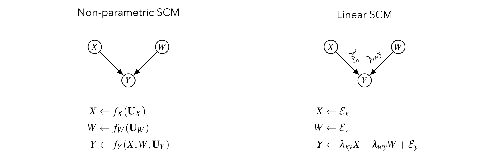
선형 SCM에서는 구조계수를 그래프의 간선 위에 직접 적을 수 있고, 그것만으로 모형이 완전히 명세됩니다.
1.4 잠재 교란과 양방향 간선 (Latent Confounding)
오차항 \(E_i\)와 \(E_j\) 사이의 공분산은 \(\varepsilon_{ij}\)로 표기하며, 이는 양방향 간선(bidirected edge)의 값으로 그래프에 그려집니다.
\[ \varepsilon_{xy} = \mathbb{E}[E_x E_y] \]
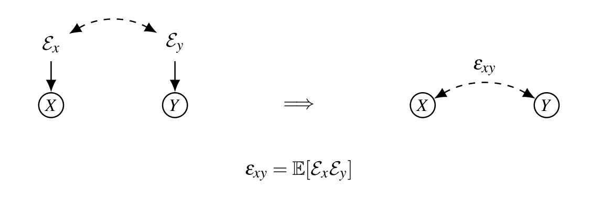
- \(\varepsilon_{xy}\)는 잠재변수의 공분산이므로 관측 불가능(unobserved) 합니다.
- 그러나 수식 전개에 유용하므로 구조계수처럼 그래프에 그립니다.
- 주의: 비모수 SCM에서 양방향 간선은 ’명시적 잠재 공통원인’을 의미할 수 있었지만, 선형 SCM에서는 오차 공분산이라는 약속입니다.
1.5 선형 SCM에서의 개입 (Interventions)
\(X \xrightarrow{\lambda} Y\) 구조에서 개입효과 \(\mathbb{E}[Y \mid do(X = x)]\)를 계산해 봅니다. 개입 \(do(X=x)\)는 \(X\)로 들어오는 구조방정식을 끊고 \(X\)를 상수 \(x\)로 고정하므로, \(Y = \lambda X + E_y\)에서 \(X = x\)를 대입합니다.
\[ \begin{aligned} \mathbb{E}[Y \mid do(X=x)] &= \int y\, P(Y=y \mid do(x))\, dy \\ &= \int y\, P(\lambda X + E_y = y \mid do(x))\, dy \\ &= \int y\, P(\lambda x + E_y = y)\, dy \qquad (X \text{는 } x \text{로 고정}) \\ &= \int (\lambda x + e)\, P(E_y = e)\, de \qquad (\text{치환 } e = y - \lambda x) \\ &= \lambda x \int P(E_y = e)\, de + \int e\, P(E_y = e)\, de \\ &= \lambda x \cdot 1 + \mathbb{E}[E_y] \\ &= \lambda x. \end{aligned} \]
- 둘째 줄에서 셋째 줄: 개입은 \(X\)의 값을 외부에서 \(x\)로 강제하므로, \(Y\) 방정식 안의 \(X\)를 \(x\)로 치환합니다.
- 마지막에서 \(\int P(E_y=e)de = 1\)(확률밀도의 적분), \(\mathbb{E}[E_y] = 0\)(정규화 가정)을 사용했습니다.
더 간결하게는 기댓값의 선형성으로 곧바로 얻을 수 있습니다.
\[ \mathbb{E}[Y \mid do(X=x)] = \mathbb{E}[\lambda x + E_y] = \lambda x + \mathbb{E}[E_y] = \lambda x. \]
결론: 구조계수 \(\lambda\)가 곧 개입효과의 기울기입니다. 따라서 인과추론의 목표는 \(\lambda\)를 알아내는 것입니다.
1.6 식별 문제의 정식화 (The Problem Statement)
선형 SCM의 식별 문제는 다음 세 가지로 구성됩니다.
- 그래프 \(G\): 무엇이 무엇의 원인인지, 어떤 변수가 미지의 공통원인을 갖는지에 대한 가설적 인과구조는 주어졌다고 가정합니다.
- 관측 데이터: 관측 가능한 모든 변수의 측정값 집합 \(\{(x^{(i)}, y^{(i)})\}_{i=1}^{N}\)을 가지고 있습니다. 이로부터 공분산 \(\sigma_{ij}\)를 추정할 수 있습니다.
- 구조계수 \(\lambda\): 우리가 알지 못하는 대상이며, 바로 찾고자 하는 실제 인과효과입니다.
핵심 질문: 관측 가능한 \(\sigma\)들로부터 미지의 \(\lambda\)를 풀어낼 수 있는가?
1.7 관측량과 미관측량의 연결 (Connecting Observed with Unobserved)
교란이 없는 경우
\(X \xrightarrow{\lambda} Y\) (\(E_x \perp E_y\))에서 공분산 \(\sigma_{xy}\)를 계산합니다.
\[ \begin{aligned} \sigma_{xy} = \mathbb{E}[XY] &= \mathbb{E}[X(\lambda X + E_y)] \\ &= \mathbb{E}[\lambda XX + X E_y] \\ &= \lambda \underbrace{\mathbb{E}[XX]}_{=1} + \underbrace{\mathbb{E}[X E_y]}_{=0} \\ &= \lambda. \end{aligned} \]
- \(\mathbb{E}[XX]=1\): 정규화 가정.
- \(\mathbb{E}[XE_y]=0\): \(X = E_x\)이고 \(E_x \perp E_y\)이므로 \(\mathbb{E}[E_x E_y]=0\).
따라서 교란이 없으면 관측 공분산이 곧 구조계수입니다: \(\sigma_{xy} = \lambda\).
교란이 있는 경우
이제 \(X \leftrightarrow Y\) 양방향 간선(\(\varepsilon_{xy}\))이 추가되면,
\[ \begin{aligned} \sigma_{xy} = \mathbb{E}[XY] &= \mathbb{E}[X(\lambda X + E_y)] \\ &= \lambda \,\mathbb{E}[XX] + \mathbb{E}[X E_y] \\ &= \lambda + \mathbb{E}[E_x E_y] \\ &= \lambda + \varepsilon_{xy}. \end{aligned} \]
이번에는 \(\mathbb{E}[E_x E_y] = \varepsilon_{xy} \neq 0\)이므로 공분산이 구조계수 + 교란항으로 오염됩니다. 관측량 하나(\(\sigma_{xy}\))에 미지수가 둘(\(\lambda, \varepsilon_{xy}\))이므로 분리가 불가능합니다.
1.8 흥미로운 성질 (A Curious Property)
연쇄 구조 \(X \xrightarrow{\lambda_{xz}} Z \xrightarrow{\lambda_{zy}} Y\)를 봅니다. 먼저 \(X \leftrightarrow Z\)에 교란이 없는 경우:
\[ \begin{aligned} \sigma_{xy} = \mathbb{E}[XY] &= \mathbb{E}[X(\lambda_{zy} Z + E_y)] \\ &= \lambda_{zy}\,\mathbb{E}[XZ] + \underbrace{\mathbb{E}[X E_y]}_{=0} \\ &= \lambda_{zy}\,\mathbb{E}\big[X(\lambda_{xz} X + E_z)\big] \\ &= \lambda_{zy}\lambda_{xz}\,\mathbb{E}[XX] + \lambda_{zy}\,\mathbb{E}[X E_z] \\ &= \lambda_{zy}\lambda_{xz} + \lambda_{zy}\underbrace{\mathbb{E}[E_x E_z]}_{=0} \\ &= \lambda_{zy}\lambda_{xz}. \end{aligned} \]
공분산이 경로 위 계수들의 곱(\(\lambda_{xz}\lambda_{zy}\))으로 나타납니다. 이제 \(X \leftrightarrow Z\)에 교란 \(\varepsilon_{xz}\)가 있는 경우, 마지막 단계만 바뀝니다.
\[ \sigma_{xy} = \lambda_{zy}\lambda_{xz} + \lambda_{zy}\,\mathbb{E}[E_x E_z] = \lambda_{zy}\lambda_{xz} + \lambda_{zy}\varepsilon_{xz}. \]
즉 \(X \to Z \to Y\) 경로(\(\lambda_{xz}\lambda_{zy}\))와 \(X \leftrightarrow Z \to Y\) 경로(\(\varepsilon_{xz}\lambda_{zy}\))가 더해집니다.
1.9 경로와 공분산 (Paths and Covariances)
\(Z \xrightarrow{\lambda_{zx}} X \xrightarrow{\lambda_{xy}} Y\)이고 \(Z \leftrightarrow Y\)에 \(\varepsilon_{zy}\)가 있는 경우:
\[ \begin{aligned} \sigma_{xy} = \mathbb{E}[XY] &= \mathbb{E}[X(\lambda_{xy} X + E_y)] \\ &= \lambda_{xy}\,\mathbb{E}[XX] + \mathbb{E}[X E_y] \\ &= \lambda_{xy} + \mathbb{E}\big[(\lambda_{zx} Z + E_x)E_y\big] \\ &= \lambda_{xy} + \lambda_{zx}\underbrace{\mathbb{E}[E_z E_y]}_{=\varepsilon_{zy}} + \underbrace{\mathbb{E}[E_x E_y]}_{=0} \\ &= \lambda_{xy} + \lambda_{zx}\varepsilon_{zy}. \end{aligned} \]
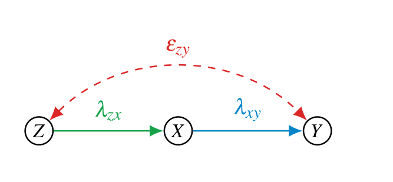
여기서 핵심 관찰: 공분산의 각 항이 그래프의 경로 하나하나에 대응한다는 것입니다.
1.10 트렉과 Wright의 규칙 (Treks & Wright’s Rule)
위 관찰을 일반화한 것이 Wright의 경로 규칙(1921) 입니다.
두 변수 \(X, Y\) 사이의 공분산은, 둘 사이의 모든 트렉(trek) — 즉 화살표 머리가 충돌하지 않는(\(\to \cdot \leftarrow\) 형태가 없는) 자기교차 없는 경로 — 위의 계수 곱의 합과 같다.
예컨대 §1.9의 그래프에서
\[ \sigma_{xy} = \underbrace{(X \xrightarrow{\lambda_{xy}} Y)}_{\lambda_{xy}} + \underbrace{(X \xleftarrow{\lambda_{zx}} Z \xleftrightarrow{\varepsilon_{zy}} Y)}_{\lambda_{zx}\varepsilon_{zy}} = \lambda_{xy} + \lambda_{zx}\varepsilon_{zy}. \]
좀 더 복잡한 그래프(아래 그림)에서도 같은 원리로 모든 트렉을 더합니다.
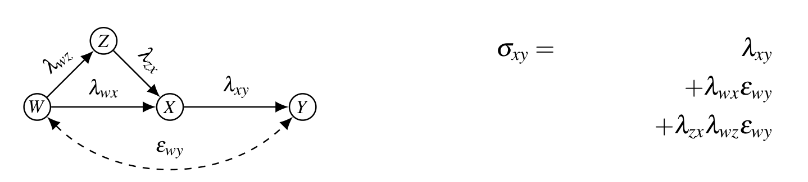
\[ \sigma_{xy} = \lambda_{xy} + \lambda_{wx}\varepsilon_{wy} + \lambda_{zx}\lambda_{wz}\varepsilon_{wy}. \]
\[ \sigma_{xy} = \sum (\text{$X$와 $Y$ 사이의 모든 열린 경로를 따라 계산한 경로계수 곱}) \]
- \(X\)와 \(Y\)가 d-분리(d-separated) 되어 있으면 \(\sigma_{xy} = 0\).
- 모형에 간선 \(X \xrightarrow{\alpha} Y\)가 있으면 \(\sigma_{xy} = \alpha + (\text{다른 경로들})\). 따라서 간선 \(\alpha\)를 제거한 그래프 \(G_{\alpha^-}\)에서 \(X, Y\)가 d-분리되면 \(\sigma_{xy} = \alpha\).
- Wright의 규칙은 비순환(acyclic) 모형에 대해 정의됩니다.
세 번째 항목의 단서에 주의할 필요가 있습니다. 순환(cycle)이 있으면 같은 두 노드를 잇는 트렉이 무한히 많아져 “모든 경로의 합”이라는 표현 자체가 수렴을 따로 논해야 하는 급수가 되고, 그래서 Wright의 규칙은 비순환 모형에 한정해 진술됩니다. 두 번째 항목은 뒤에 나올 단일문 기준(§2.10)의 씨앗입니다 — 간선 하나만 지운 그래프에서 d-분리가 성립하면 그 간선의 계수가 공분산으로 그대로 읽힌다는 말이기 때문입니다.
한 가지 더 복잡한 예시 (One More Example)
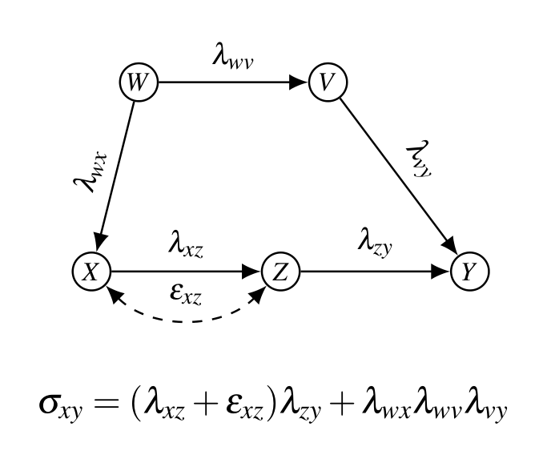
\[ \sigma_{xy} = (\lambda_{xz} + \varepsilon_{xz})\lambda_{zy} + \lambda_{wx}\lambda_{wv}\lambda_{vy}. \]
트렉을 셀 때 흔히 놓치는 지점을 짚어 두겠습니다. \(X \to Z \leftarrow \cdots\) 처럼 화살표 머리가 한 노드에서 충돌하는(콜라이더) 경로는 트렉이 아니므로 합산에서 빠집니다. 위 그래프에서 \(X \to Z\)와 \(Y \to Z\)가 함께 있었다면 그 경로는 세어서는 안 됩니다. 트렉은 “어떤 정점에서 출발해 화살표를 거슬러 올라갔다가 다시 내려오는” 형태 — 즉 \(\leftarrow \cdots \leftarrow \circ \to \cdots \to\) 모양 — 만 허용합니다.
2. 선형 회귀와 인과효과 (Linear Regression)
이 절의 구성(강의 내 두 번째 Overview)은 다음과 같습니다: 선형 회귀 → 알고리즘적 식별 → IV에서 도구집합으로 → 보조변수 기법. 먼저 회귀가 인과효과를 줄 때와 그렇지 않을 때를 직관적인 예시로 살펴봅니다.
2.1 예시: 의료 연구자 (The Medical Researcher)
어떤 신약이 질병 치료에 도움이 되는지 판단하려는 의료 연구자가 있다고 합시다. 그의 권고는 전국의 의사들이 따르게 됩니다.
Step 1 — 데이터 수집: 약을 복용한 환자들에 대해 (1) 복용량과 (2) 혈중 바이오마커(항체) 양을 측정합니다.
Step 2 — 회귀 수행: \(X\)=복용량, \(Y\)=바이오마커로 회귀 \(Y = \beta X + e\)를 적합하니 \(\beta = 0.375\). 약이 유익해 보여 사용을 승인합니다.
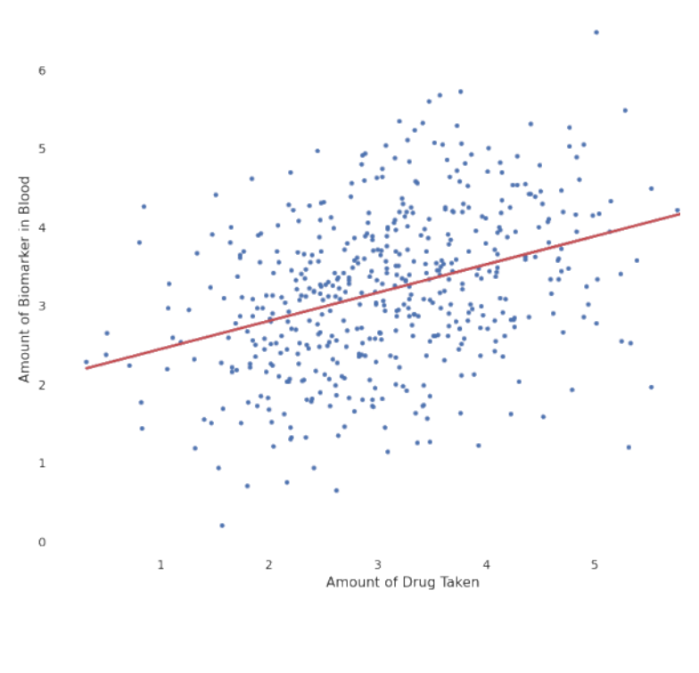
- Step 3 — 전 인구에 투약: 약을 모든 사람에게 투여하자, 결과는 기울기 \(-1\)의 명확한 음(−)의 연관으로 나타납니다. 이 약은 오히려 해롭습니다!
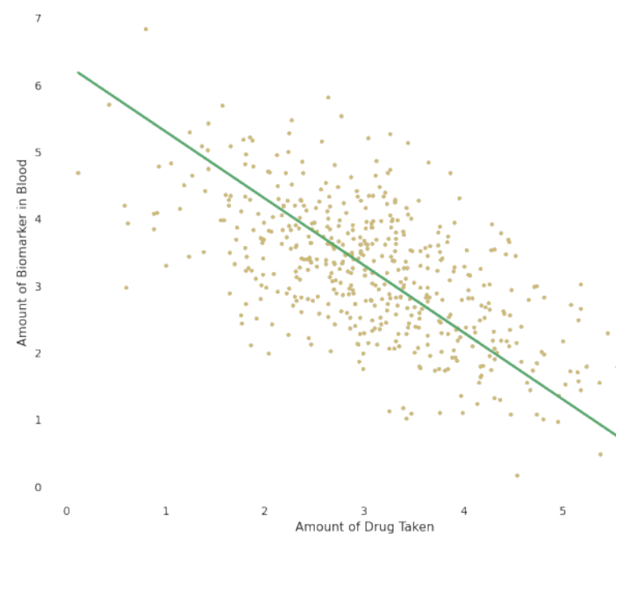
- 무슨 일이 일어난 걸까? 음의 효과가 원래 데이터에서 보이지 않은 이유는 데이터 부족이 아닙니다. 원래 회귀(빨간 선)가 ’실패’한 이유, 그리고 참 인과효과(초록 선)를 얻을 방법이 있는지가 핵심 질문입니다.
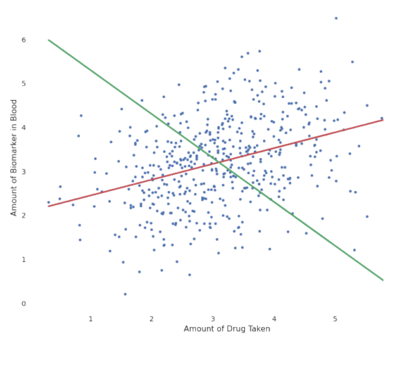
2.2 핵심 가정: 교란의 부재 (Key Assumption: Lack of Confounding)
회귀계수에 인과적 의미를 부여할 때 암묵적으로 가정되는 세계 모형은 다음과 같습니다.
\[ X \leftarrow E_x, \qquad Y \leftarrow \lambda_{xy} X + E_y, \qquad E_x \perp E_y. \]
이때 공분산은 §1.7에서 본 대로
\[ \sigma_{xy} = \mathbb{E}[XY] = \lambda_{xy}\underbrace{\mathbb{E}[XX]}_{=1} + \underbrace{\mathbb{E}[X E_y]}_{=0} = \lambda_{xy} \]
가 되어 회귀가 인과효과를 정확히 줍니다.
2.3 참 모형: 교란이 있을 때 (The Ground-Truth Model)
그러나 \(X\)와 \(Y\) 사이 교란의 부재를 확신할 수 없다면, 대응하는 그래프는 \(E_x, E_y\)가 상관된 모형입니다. 이때 회귀 \(Y = \beta X + e\)는 편향된 답을 줍니다.
\[ \sigma_{xy} = \lambda_{xy}\,\mathbb{E}[XX] + \mathbb{E}[E_x E_y] = \lambda_{xy} + \varepsilon_{xy}. \]
약의 효과(\(\lambda_{xy}\))와 교란(\(\varepsilon_{xy}\))을 분리하는 것은 증명 가능하게 불가능(provably impossible) 합니다. 즉 \(\lambda_{xy}\)는 식별 불가능(not identifiable) 합니다. (Figure 7의 음/양 역전이 바로 이 \(\varepsilon_{xy}\) 때문입니다.)
2.4 회귀는 무엇을 계산하는가 (What does Regression Compute?)
\(Y = \beta X + e\)에서 \(\beta\)가 실제로 무엇인지 최소제곱으로 기호적으로 풀어 봅니다. 손실은
\[ \begin{aligned} \mathbb{E}[(Y - \beta X)^2] &= \mathbb{E}[YY - 2\beta XY + \beta^2 XX] \\ &= \mathbb{E}[YY] - 2\beta\,\mathbb{E}[XY] + \beta^2\,\mathbb{E}[XX] \\ &= 1 - 2\beta\sigma_{xy} + \beta^2 \qquad (\mathbb{E}[YY]=\mathbb{E}[XX]=1,\ \mathbb{E}[XY]=\sigma_{xy}). \end{aligned} \]
\(\beta\)에 대해 미분하여 0으로 놓으면,
\[ \frac{\partial}{\partial \beta}\big(1 - 2\beta\sigma_{xy} + \beta^2\big) = -2\sigma_{xy} + 2\beta = 0 \quad\Longrightarrow\quad \boxed{\beta = \sigma_{xy}}. \]
회귀계수는 그저 \(X\)와 \(Y\)의 공분산일 뿐입니다. (표준화 가정 하에서는 상관계수와 같습니다.)
2.5 회귀식 vs 구조식: 세기의 혼동 (Confusion of the Century)
- 회귀식 (Regression Equation): \[ Y = \beta X + e, \qquad e \perp X \] 풀면 \(\beta = \sigma_{xy}\)이며, 이 해를 \(r_{yx}\)로 표기합니다(\(Y\)를 \(X\)에 회귀한 해). 인과적 주장을 전혀 하지 않습니다. \(e \perp X\)는 가정이 아니라, 최소제곱 잔차의 정의에서 따라오는 성질입니다.
- 구조식 (Structural Equation): \[ Y = \lambda X + E_y, \qquad \mathbb{E}[Y \mid do(X)] = \lambda X \] 개입 분포에 대한 주장을 하며, 따라서 검증 가능(testable) 하고 반증 가능(falsifiable) 합니다.
같은 형태의 방정식이지만 의미가 전혀 다릅니다. \(r_{yx}\)는 관측적 양, \(\lambda\)는 인과적 양입니다.
2.6 회귀의 암묵적 가정 (The Implicit Assumption)
회귀로 인과적 주장을 할 때 암묵적으로 가정되는 모형은 다음과 같이 공통의 결과를 향해 화살표가 모이는 구조입니다.
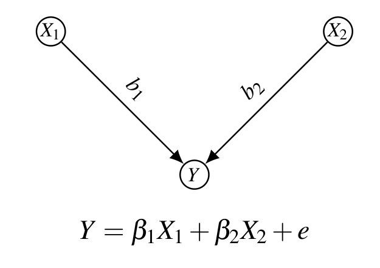
\[ Y = \beta_1 X_1 + \beta_2 X_2 + e \quad\Longrightarrow\quad \beta_1 = b_1,\ \beta_2 = b_2. \]
2.7 경고: 올바른 그래프를 쓰고 있는가 (Make sure you have the right graph)
그런데 화살표 방향이 뒤집혀 \(Y\)가 \(X_1, X_2\)의 공통원인인 경우(\(Y \to X_1\), \(Y \to X_2\), 즉 \(X_1 \leftarrow Y \to X_2\))를 봅시다.
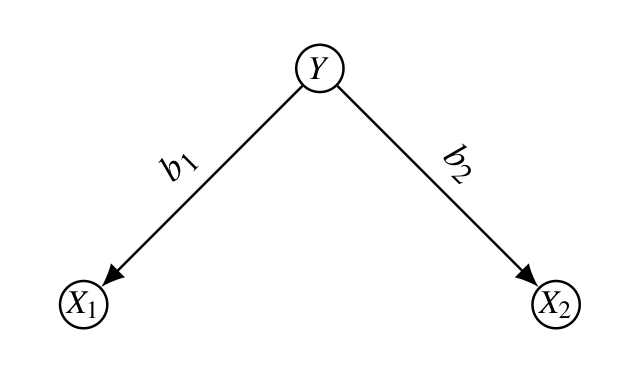
단순회귀로는 \(r_{yx_1} = b_1\), \(r_{yx_2} = b_2\)가 나오지만, 다중회귀 \(Y = \beta_1 X_1 + \beta_2 X_2 + e\)를 하면 계수가 다음과 같이 왜곡됩니다.
\[ \beta_1 = \frac{b_1(1 - b_2^2)}{1 - b_1^2 b_2^2}, \qquad \beta_2 = \frac{b_2(1 - b_1^2)}{1 - b_1^2 b_2^2}. \]
무엇을 함께 통제하느냐에 따라 회귀계수의 값과 의미가 완전히 달라집니다. 올바른 그래프를 모르면 회귀는 위험합니다.
2.8 회귀로 d-분리 검정하기 (Testing D-Separation with Regression)
회귀는 d-분리와 깊게 연결됩니다.
\[ (X \perp Y \mid Z) \quad\Longleftrightarrow\quad r_{yx\cdot z} = 0. \]
검정 방법은 다음 회귀를 수행하는 것입니다.
\[ Y = \beta X + \alpha Z. \]
- \(\beta = 0\)이면 \(Z\)가 \(X\)와 \(Y\)를 d-분리합니다.
- \(\beta \neq 0\)이면 \((X \not\perp Y \mid Z)\)입니다.
여기서 \(r_{yx\cdot z}\)는 “\(Z\)를 통제한 뒤 \(Y\)를 \(X\)에 회귀한 부분회귀계수(partial regression coefficient)”를 뜻합니다.
2.9 회귀는 조심해서 (Be Careful with Regression)
같은 그래프에서도 어떤 변수를 회귀에 포함하느냐에 따라 \(X \to Y\)의 추정치가 달라집니다. 아래 그림의 모형(\(W\)가 \(X, Y\)의 공통원인, \(Z\)는 두 양방향 간선이 만나는 콜라이더)을 예로 들면:
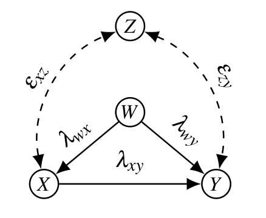
- \(Y = \beta X + e\) : \(\beta = \sigma_{xy} = \lambda_{xy} + \lambda_{wx}\lambda_{wy}\) — 뒷문 경로 \(X \leftarrow W \to Y\)가 열려 있어 그만큼 편향됩니다.
- \(Y = \beta X + \alpha W + \gamma Z + e\) : \(\beta = \lambda_{xy} - \dfrac{\varepsilon_{xz}\varepsilon_{zy}}{1 - \lambda_{wx}^2 - \varepsilon_{xz}^2}\) — \(W\)를 넣어 뒷문은 막았지만, 콜라이더 \(Z\)까지 조건화하는 바람에 \(X \leftrightarrow Z \leftrightarrow Y\) 경로가 새로 열려 다른 편향이 생깁니다.
- \(Y = \beta X + \alpha W + e\) : \(\beta = \lambda_{xy}\) — 정확히 식별됩니다.
세 번째 회귀는 두 번째 회귀보다 통제 변수가 적은데도 정답을 줍니다. “가능한 변수를 다 넣고 통제하면 안전하다”는 직관이 정면으로 깨지는 지점입니다. \(Z\)처럼 콜라이더 역할을 하는 변수는 조건화하는 순간 닫혀 있던 경로를 열어 없던 편향을 만들어냅니다. 변수를 더 많이 통제한다고 항상 좋은 것이 아니며, 그래프가 시키는 대로 정확한 집합을 통제해야 합니다.
2.10 단일문 기준 (Single-Door Criterion)
그렇다면 회귀를 올바르게 쓰려면 어떤 변수를 통제해야 할까요? 이를 그래프로 규정한 것이 단일문 기준입니다. 모형 \(Z \xrightarrow{\lambda_{zx}} X \xrightarrow{\lambda_{xy}} Y\), \(Z \leftrightarrow Y(\varepsilon_{zy})\)에서 \(\lambda_{xy}\)를 찾고자 합니다.
단순회귀로는 \(r_{yx} = \sigma_{xy} = \lambda_{xy} + \lambda_{zx}\varepsilon_{zy}\)로 편향됩니다. 대신 \(Z\)를 함께 넣어 \(Y = \alpha X + \beta Z + e\)를 풀어 봅니다. 손실은
\[ \mathbb{E}[(Y - \alpha X - \beta Z)^2] = 1 - 2\alpha\sigma_{xy} - 2\beta\sigma_{yz} + 2\alpha\beta\sigma_{xz} + \alpha^2 + \beta^2. \]
편미분을 0으로 놓으면,
\[ \frac{\partial}{\partial\alpha} = 2\alpha - 2\sigma_{xy} + 2\beta\sigma_{xz} = 0, \qquad \frac{\partial}{\partial\beta} = 2\beta - 2\sigma_{yz} + 2\alpha\sigma_{xz} = 0, \]
즉 정규방정식(normal equations)
\[ \begin{cases} \sigma_{xy} = \alpha + \beta\sigma_{xz} \\ \sigma_{yz} = \beta + \alpha\sigma_{xz} \end{cases} \]
이 얻어집니다. 여기에 Wright 규칙으로 계산한 \(\sigma_{xy} = \lambda_{xy} + \lambda_{zx}\varepsilon_{zy}\), \(\sigma_{yz} = \lambda_{xy}\lambda_{zx} + \varepsilon_{zy}\), \(\sigma_{xz} = \lambda_{zx}\)를 대입하면
\[ \begin{cases} \lambda_{xy} + \lambda_{zx}\varepsilon_{zy} = \alpha + \beta\lambda_{zx} \\ \lambda_{xy}\lambda_{zx} + \varepsilon_{zy} = \alpha\lambda_{zx} + \beta \end{cases} \quad\Longrightarrow\quad \boxed{\alpha = \lambda_{xy},\quad \beta = \varepsilon_{zy}}. \]
따라서 \(Z\)를 통제한 회귀계수 \(\alpha\)가 바로 구조계수 \(\lambda_{xy}\)가 됩니다.
\(G\)를 경로 다이어그램, \(\lambda\)를 간선 \(X \to Y\)의 경로계수라 하고, \(G_\lambda\)를 \(X \to Y\)를 제거한 다이어그램이라 하자. 다음을 만족하는 집합 \(Z\)가 존재하면 \(\lambda\)는 식별 가능하다.
- \(Z\)는 \(Y\)의 후손(descendant)을 포함하지 않으며,
- \(Z\)는 \(G_\lambda\)에서 \(X\)와 \(Y\)를 d-분리한다.
이때 \(\lambda = r_{yx \cdot z}\).
두 조건이 각각 무엇을 막고 있는지가 중요합니다. 두 번째 조건은 “\(X \to Y\) 간선을 지우고 나면 \(X\)와 \(Y\)를 잇는 다른 통로가 남지 않아야 한다”는 요구로, Wright 규칙에 따라 \(r_{yx \cdot z}\)에 \(\lambda\) 외의 항이 섞이지 않게 합니다. 첫 번째 조건은 \(Y\)의 후손을 조건화해 콜라이더를 여는 사고를 원천 차단합니다 — §2.9에서 \(Z\)를 통제하는 순간 새 편향이 생겼던 것이 정확히 이 조건을 어긴 경우입니다.
예시 (Single-Door — Examples)
- \(A \to Y\), \(A \leftarrow B \to Y\) 형태(공통원인 \(B\)): \(\lambda_{ay} = r_{ya \cdot b}\) (\(B\)를 통제).
- 대칭적으로 \(\lambda_{by} = r_{yb \cdot a}\).
- \(X \xrightarrow{\lambda_{xy}} Y\)이고 다른 경로가 없으면 단순히 \(\lambda_{xy} = r_{yx}\).
- \(W \xrightarrow{\lambda_{wz}} Z\)를 찾을 때 추가 경로가 있으면 적절한 집합을 조건화하여 \(\lambda_{wz} = r_{zw \cdot yx}\)처럼 식별합니다.
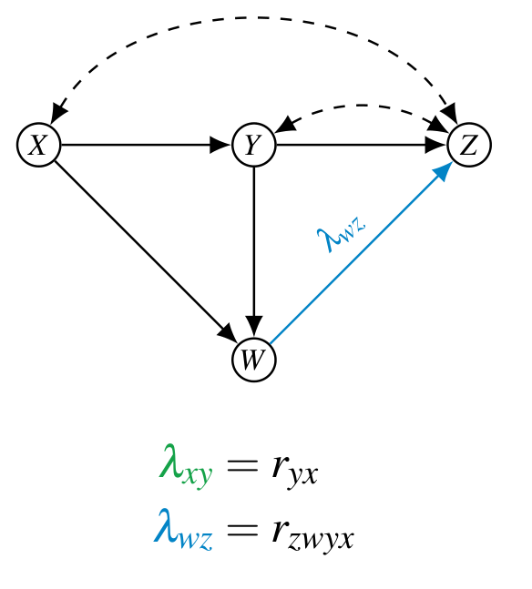
2.11 뒷문 기준 (Back-Door Criterion)
단일문이 직접효과(\(\lambda\), 하나의 간선)를 식별한다면, 뒷문 기준은 총효과(total effect) 를 식별합니다.
인과 다이어그램 \(G\)의 두 변수 \(X, Y\)에 대해, 다음을 만족하는 측정 집합 \(Z\)가 존재하면 \(X\)가 \(Y\)에 미치는 총효과는 식별 가능하다.
- \(Z\)의 어떤 원소도 \(X\)의 후손이 아니며,
- \(Z\)는 부분그래프 \(G_{\underline{X}}\)(\(X\)에서 나가는 간선을 제거한 그래프)에서 \(X\)와 \(Y\)를 d-분리한다.
이때 총효과는 \(r_{yx \cdot z}\)로 주어진다.
단일문 vs 뒷문 비교: 단일문은 간선을 제거한 \(G_\lambda\)를 보고 직접효과를, 뒷문은 나가는 화살을 제거한 \(G_{\underline{X}}\)를 보고 총효과를 다룹니다. 두 기준이 “어느 그래프에서 d-분리를 요구하는가”에서만 갈린다는 점이 인상적입니다 — \(G_\lambda\)는 간선 하나만 지우므로 나머지 인과 경로를 살려 두고 그 간선만 도려내고, \(G_{\underline{X}}\)는 \(X\)에서 나가는 모든 화살을 지우므로 \(X \to \cdots \to Y\)의 모든 인과 경로를 통째로 남긴 채 뒷문만 봅니다.
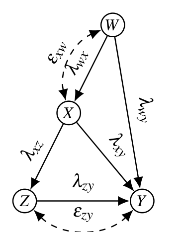
- 총효과 \(= \lambda_{xz}\lambda_{zy} + \lambda_{xy}\) (직접 + 간접).
- 뒷문 경로를 막는 \(W\)를 통제하여 \(r_{yx \cdot w}\)로 식별합니다.
3. 알고리즘적 식별 방법 (Algorithmic Identification Methods)
3.1 선형 식별의 방정식 (The Equations of Linear Identification)
\(Z \to X \to Y\), \(Z \leftrightarrow Y(\varepsilon_{zy})\) 모형에서 (표준화로 대각이 1인) 공분산 행렬을 Wright 규칙으로 쓰면:
\[ \Sigma = \begin{pmatrix} \sigma_{xx} & \sigma_{xy} & \sigma_{xz} \\ \sigma_{yx} & \sigma_{yy} & \sigma_{yz} \\ \sigma_{zx} & \sigma_{zy} & \sigma_{zz} \end{pmatrix} = \begin{pmatrix} 1 & \lambda_{xy} + \lambda_{zx}\varepsilon_{zy} & \lambda_{zx} \\ \lambda_{xy} + \lambda_{zx}\varepsilon_{zy} & 1 & \lambda_{zx}\lambda_{xy} + \varepsilon_{zy} \\ \lambda_{zx} & \lambda_{zx}\lambda_{xy} + \varepsilon_{zy} & 1 \end{pmatrix}. \]
- 좌변 \(\Sigma\)의 성분들은 계산 가능(computable) — 데이터에서 추정됩니다.
- 우변은 미관측 파라미터들의 식(expressions with unobservables) \(\lambda, \varepsilon\)로 이루어져 있습니다.
식별이란, 이 등식 체계를 풀어 미관측 \(\lambda\)를 관측 \(\sigma\)로 표현하는 일입니다.
3.2 식별의 일반적 아이디어 (The General Idea)
위 행렬에서 독립적인 방정식만 추리면
\[ \sigma_{xz} = \lambda_{zx}, \qquad \sigma_{xy} = \lambda_{xy} + \lambda_{zx}\varepsilon_{zy}, \qquad \sigma_{zy} = \lambda_{zx}\lambda_{xy} + \varepsilon_{zy}. \]
- 첫 식에서 곧바로 \(\lambda_{zx} = \sigma_{xz}\)를 이미 알게 됩니다.
- 이를 나머지 두 식에 대입하면 \[ \sigma_{xy} = \lambda_{xy} + \sigma_{xz}\varepsilon_{zy}, \qquad \sigma_{zy} = \sigma_{xz}\lambda_{xy} + \varepsilon_{zy}. \]
- 이제 두 미지수 \(\lambda_{xy}, \varepsilon_{zy}\)에 대한 두 개의 완전계수(full-rank) 선형방정식이므로 (가우스 소거법으로) 유일하게 풀립니다. → 식별 가능.
이처럼 “이미 푼 파라미터를 다른 식에 대입”하는 연쇄가 식별 알고리즘의 핵심 동작입니다.
3.3 비식별성 (Non-Identifiability)
반면 \(X \xrightarrow{\lambda_{xy}} Y\), \(X \leftrightarrow Y(\varepsilon_{xy})\)만 있는 모형에서는
\[ \begin{pmatrix} \sigma_{xx} & \sigma_{xy} \\ \sigma_{yx} & \sigma_{yy} \end{pmatrix} = \begin{pmatrix} 1 & \lambda_{xy} + \varepsilon_{xy} \\ \lambda_{xy} + \varepsilon_{xy} & 1 \end{pmatrix}. \]
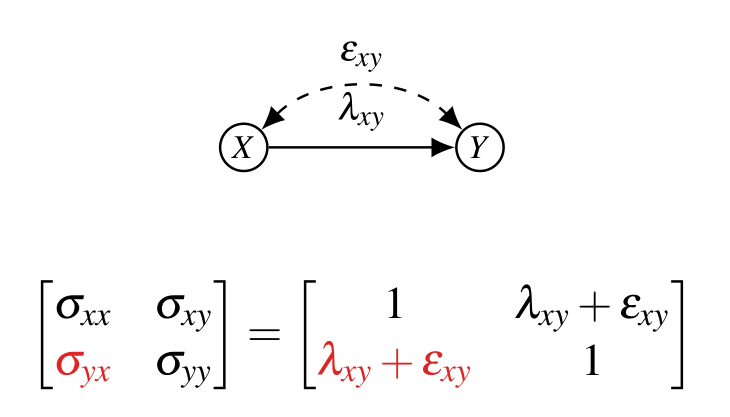
유효한 정보는 \(\sigma_{xy} = \lambda_{xy} + \varepsilon_{xy}\) 하나인데 미지수는 둘입니다. 하나의 방정식에 두 미지수 → 같은 공분산을 주는 \((\lambda_{xy}, \varepsilon_{xy})\)가 무한히 많아 식별 불가능합니다.
3.4 유한 식별성 (Finite Identifiability)
어떤 그래프에서는 식별 방정식이 비선형(예: 이차) 이 되어 해가 유한 개 나옵니다. 강의의 예시 그래프(\(X\)가 \(W, Z, Y\)의 부모이고, 그 세 간선 각각에 양방향 간선이 겹쳐 있는 구조)를 봅시다.
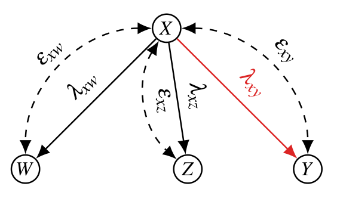
Wright 규칙을 이 그래프에 적용하면 6개의 미지수(\(\lambda_{xw}, \lambda_{xz}, \lambda_{xy}, \varepsilon_{xw}, \varepsilon_{xz}, \varepsilon_{xy}\))에 대한 6개의 방정식이 나옵니다.
\[ \begin{aligned} \sigma_{xw} &= \lambda_{xw} + \varepsilon_{xw}, &\qquad \sigma_{wz} &= \lambda_{xw}\lambda_{xz} + \lambda_{xz}\varepsilon_{xw} + \lambda_{xw}\varepsilon_{xz}, \\ \sigma_{xz} &= \lambda_{xz} + \varepsilon_{xz}, &\qquad \sigma_{wy} &= \lambda_{xw}\lambda_{xy} + \lambda_{xw}\varepsilon_{xy} + \lambda_{xy}\varepsilon_{xw}, \\ \sigma_{xy} &= \lambda_{xy} + \varepsilon_{xy}, &\qquad \sigma_{zy} &= \lambda_{xz}\lambda_{xy} + \lambda_{xz}\varepsilon_{xy} + \lambda_{xy}\varepsilon_{xz}. \end{aligned} \]
왼쪽 열의 세 식은 \(X\)와 각 자식 사이의 공분산으로, 모두 “\(\lambda + \varepsilon\)” 형태라 단독으로는 두 항을 분리할 수 없습니다. 오른쪽 열의 세 식은 자식들끼리의 공분산인데, 여기서는 \(\lambda\)와 \(\varepsilon\)의 곱이 등장합니다. 미지수의 곱이 섞이는 순간 체계는 선형이 아니게 되고, 다른 미지수를 소거해 나가면 \(\lambda_{xy}\)에 대한 다음 이차식이 남습니다.
\[ 0 = (\sigma_{xw}\sigma_{xz} - \sigma_{wz})\lambda_{xy}^2 + 2(\sigma_{xy}\sigma_{wz} - \sigma_{xw}\sigma_{xz}\sigma_{xy})\lambda_{xy} + (\sigma_{yw}\sigma_{xz}\sigma_{xy} + \sigma_{yz}\sigma_{xy}\sigma_{xy} - \sigma_{xy}^2\sigma_{wz} - \sigma_{yz}\sigma_{yw}). \]
이차방정식이므로 근의 공식으로 두 개의 후보 해를 얻습니다. 계수를 \(a = \sigma_{xw}\sigma_{xz} - \sigma_{wz}\), \(2b = 2(\sigma_{xy}\sigma_{wz} - \sigma_{xw}\sigma_{xz}\sigma_{xy})\), \(c = (\sigma_{yw}\sigma_{xz}\sigma_{xy} + \sigma_{yz}\sigma_{xy}^2 - \sigma_{xy}^2\sigma_{wz} - \sigma_{yz}\sigma_{yw})\)로 두면 \(\lambda_{xy} = (-b \pm \sqrt{b^2 - ac})/a\)이며, 풀어 쓰면 다음과 같습니다.
\[ \lambda_{xy} = \frac{-(\sigma_{xy}\sigma_{wz} - \sigma_{xw}\sigma_{xz}\sigma_{xy}) \pm \sqrt{(\sigma_{xy}\sigma_{wz} - \sigma_{xw}\sigma_{xz}\sigma_{xy})^2 - (\sigma_{xw}\sigma_{xz} - \sigma_{wz})(\sigma_{yw}\sigma_{xz}\sigma_{xy} + \sigma_{yz}\sigma_{xy}^2 - \sigma_{xy}^2\sigma_{wz} - \sigma_{yz}\sigma_{yw})}}{(\sigma_{xw}\sigma_{xz} - \sigma_{wz})}. \]
즉 관측 데이터와 일치하는 \(\lambda_{xy}\) 값이 무한히 많지도(→ 비식별) 유일하지도(→ 식별) 않은, 최대 두 개로 좁혀지는 중간 사례입니다.
3.5 선형 식별성의 3가지 경우 (The 3 Cases)
- 식별 가능(Identifiable): 관측 데이터와 일치하는 \(\lambda_{xy}\) 값이 유일.
- 유한 식별(Finite ID): 일치하는 값이 유한 개.
- 식별 불가(Not Identifiable): 일치하는 값이 무한.
3.6 선형 SCM에서의 식별 — 그래프적 접근 (Identification in Linear SCM)
§3.2의 세 방정식은 손으로 풀 수 있을 만큼 작았습니다. 그러나 노드가 하나만 늘어도 체계는 금세 감당하기 어려워집니다. 아래는 §3.2보다 노드가 하나 많을 뿐인 그래프인데, 미지수와 방정식이 각각 6개로 불어납니다.
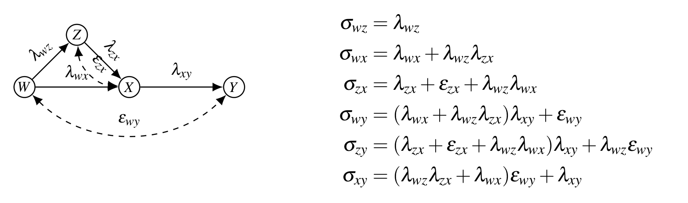
\[ \begin{aligned} \sigma_{wz} &= \lambda_{wz}, \\ \sigma_{wx} &= \lambda_{wx} + \lambda_{wz}\lambda_{zx}, \\ \sigma_{zx} &= \lambda_{zx} + \varepsilon_{zx} + \lambda_{wz}\lambda_{wx}, \\ \sigma_{wy} &= (\lambda_{wx} + \lambda_{wz}\lambda_{zx})\lambda_{xy} + \varepsilon_{wy}, \\ \sigma_{zy} &= (\lambda_{zx} + \varepsilon_{zx} + \lambda_{wz}\lambda_{wx})\lambda_{xy} + \lambda_{wz}\varepsilon_{wy}, \\ \sigma_{xy} &= (\lambda_{wz}\lambda_{zx} + \lambda_{wx})\varepsilon_{wy} + \lambda_{xy}. \end{aligned} \]
원리적으로는 이런 다항 방정식 체계를 컴퓨터 대수(computer algebra)로 풀면 됩니다. 그러나 이 방법은 파라미터 수에 대해 이중 지수적(doubly exponential) 복잡도를 가져 실용적이지 않습니다(Bardet 2002; García-Puente et al. 2010 — 자세한 내용은 부록 C).
전체 체계를 통째로 푸는 대신, 풀 수 있는 부분 방정식 체계(solvable subsystems) 또는 연쇄적 대입(series of substitutions) 을 효율적으로 찾아내는 패턴을 발견하는 것. 그리고 그 패턴을 방정식이 아니라 그래프적 기준(graphical criteria) 으로 표현하는 것.
위 체계에서도 첫 식 \(\sigma_{wz} = \lambda_{wz}\)가 곧바로 하나를 확정해 주고, 그 값을 둘째 식에 넣으면 \(\lambda_{wx}\)가 풀리는 식으로 연쇄가 이어집니다. 이 “먼저 풀리는 것부터 풀어 대입한다”는 순서를 그래프만 보고 알아낼 수 있다면, 다항 체계를 직접 건드릴 필요가 없습니다. 다음 절들에서 이러한 그래프적 기준 — IV, 조건부 IV, 도구집합, 보조변수 — 을 차례로 봅니다.
4. IV에서 도구집합으로 (IV to Instrumental Sets)
4.1 출발점: 도구변수 (Instrumental Variables)
의료 연구자 예시로 돌아가, 환자의 복용량에 영향을 주는 독립적인 의사 권고 변수 \(Z\)가 추가되었다고 합시다. 그래프는 \(Z \xrightarrow{\lambda_{zx}} X \xrightarrow{\lambda_{xy}} Y\)이고 \(X \leftrightarrow Y(\varepsilon_{xy})\)입니다.
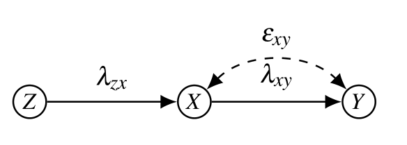
변수 \(Z\)가 \(X \to Y\)의 \(\lambda_{xy}\)에 대한 IV이려면, 부분그래프 \(G_{\lambda_{xy}}\)(\(X \to Y\) 간선을 제거한 그래프)에서
- \(Z\)가 \(Y\)와 d-분리되고,
- \(Z\)가 \(X\)와는 d-분리되지 않아야 한다.
직관적으로 \(Z\)는 “오직 \(X\)를 통해서만 \(Y\)에 영향을 주는” 외부 변동의 원천입니다. 두 조건은 계량경제학에서 익숙한 배제 제약(exclusion restriction)과 관련성(relevance)에 각각 대응하며, 여기서는 둘 다 그래프에서 기계적으로 확인 가능한 형태로 진술되어 있다는 점이 중요합니다.
4.2 2단계 최소제곱 (2-Stage Least Squares)
IV로 \(\lambda_{xy}\)를 추정하는 방법은 두 가지로 볼 수 있습니다.
방법 1 — 비율로 직접: Wright 규칙에서 \(\sigma_{zy} = \lambda_{zx}\lambda_{xy}\), \(\sigma_{zx} = \lambda_{zx}\)이므로
\[ \lambda_{xy} = \frac{\sigma_{zy}}{\sigma_{zx}} = \frac{r_{zy}}{r_{zx}}. \]
방법 2 — 2단계 회귀(2SLS):
- 1단계: \(X\)를 \(Z\)에 회귀. \(X = \alpha Z + e \Rightarrow \alpha = \sigma_{zx}\). 적합값은 \(\hat{X} = \sigma_{zx} Z\).
- 2단계: 원래 \(X\) 대신 \(\hat{X} = \sigma_{zx} Z\)를 넣어 \(Y\)를 회귀. \[ Y = \beta(\sigma_{zx} Z) + e \quad\Longrightarrow\quad \beta = \frac{\sigma_{zy}}{\sigma_{zx}}. \]
1단계가 \(X\)에서 교란과 무관한 변동분(\(Z\)로 설명되는 부분)만 뽑아내고, 2단계가 그 정제된 변동으로 \(Y\)를 설명하므로 교란을 우회합니다.
4.3 조건부 도구변수 (Conditional Instrumental Variables)
순수 IV가 없을 때, 어떤 집합 \(W\)를 조건화하면 IV 조건을 만족시킬 수 있습니다.
변수 \(Z\)가 집합 \(W\)가 주어졌을 때 \(X \to Y\)의 \(\lambda_{xy}\)에 대한 조건부 IV이려면,
- \(W\)는 \(Y\)의 비후손(non-descendant) 만 포함하고,
- \(W\)가 \(G_{\lambda_{xy}}\)에서 \(Z\)와 \(Y\)를 d-분리하며,
- \(W\)가 \(G_{\lambda_{xy}}\)에서 \(Z\)와 \(X\)는 d-분리하지 않아야 한다.
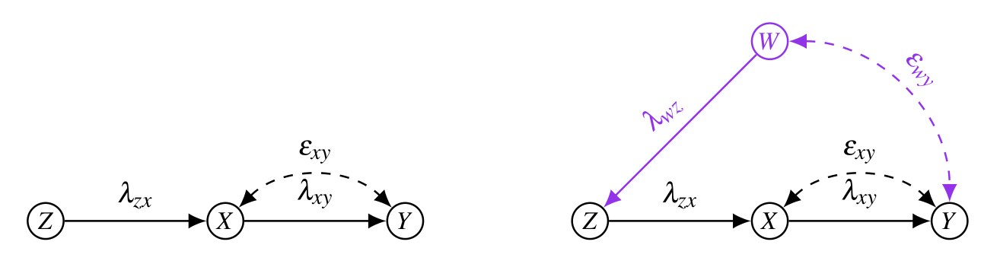
4.4 IV의 확장: 도구집합 (Instrumental Sets)
이번에는 \(Y\)의 부모가 둘(\(X_1, X_2\))이고, \(Z_1, Z_2\)에서 \(Y\)로 가는 모든 경로가 \(X_1, X_2\)를 모두 거치는 경우입니다. 단일 IV가 존재하지 않습니다. 모형은
\[ \begin{aligned} Z_1 &= E_{z_1}, \quad Z_2 = E_{z_2}, \\ X_1 &= \lambda_{z_1 x_1} Z_1 + \lambda_{z_2 x_1} Z_2 + E_{x_1}, \\ X_2 &= \lambda_{z_1 x_2} Z_1 + \lambda_{z_2 x_2} Z_2 + E_{x_2}, \\ Y &= \lambda_{x_1 y} X_1 + \lambda_{x_2 y} X_2 + E_y, \end{aligned} \]
이고 \(E_{x_1}, E_y\) 및 \(E_{x_2}, E_y\)가 상관되어 있습니다. Wright 규칙으로 \(\sigma_{z_i x_j} = \lambda_{z_i x_j}\) (\(i,j \in \{1,2\}\))이고,
\[ \begin{cases} \sigma_{z_1 y} = \lambda_{z_1 x_1}\lambda_{x_1 y} + \lambda_{z_1 x_2}\lambda_{x_2 y} \\ \sigma_{z_2 y} = \lambda_{z_2 x_1}\lambda_{x_1 y} + \lambda_{z_2 x_2}\lambda_{x_2 y} \end{cases} \;\Longleftrightarrow\; \begin{cases} \sigma_{z_1 y} = \sigma_{z_1 x_1}\lambda_{x_1 y} + \sigma_{z_1 x_2}\lambda_{x_2 y} \\ \sigma_{z_2 y} = \sigma_{z_2 x_1}\lambda_{x_1 y} + \sigma_{z_2 x_2}\lambda_{x_2 y} \end{cases} \]
\(\{Z_1, Z_2\}\)에서 \(\{X_1, X_2\}\)로 가는 경로를 이용한 선형 연립방정식이 됩니다. 미지수 \(\lambda_{x_1 y}, \lambda_{x_2 y}\)가 둘, 방정식도 둘입니다.
비공선성(non-collinearity) 조건
이 연립방정식이 풀리려면 두 방정식이 공선(collinear)이 아니어야 합니다. 만약 \(Z_1\)에서 \(Y\)로 가는 경로가 \(Z_2\)에서 \(Y\)로 가는 경로의 상수배(\(\lambda_{z_1 z_2}\)배)로 쓰일 수 있다면, 두 방정식이 동일해져 체계가 퇴화(degenerate) 합니다.
\[ \lambda_{z_1, z_2}\,\sigma_{z_2 y} = \lambda_{z_1, z_2}(\sigma_{z_2 x_1}\lambda_{x_1 y} + \sigma_{z_2 x_2}\lambda_{x_2 y}) \;\Longrightarrow\; \sigma_{z_2 y} = \sigma_{z_2 x_1}\lambda_{x_1 y} + \sigma_{z_2 x_2}\lambda_{x_2 y}. \]
이런 일이 실제로 일어나는 그래프는 다음과 같은 모습입니다.
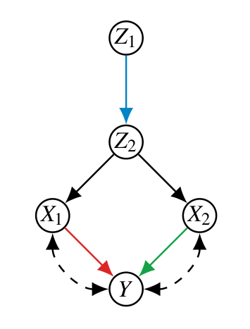
비교차 경로 ⇔ 완전계수 (Non-Intersecting Paths imply Full-Rank)
이 연립방정식이 비퇴화(non-degenerate)일 필요충분조건은, \(\{Z_1, Z_2\}\)와 \(\{X_1, X_2\}\) 사이에 서로 교차하지 않는(non-intersecting) 경로로 이루어진 완전 매칭(full matching) 이 존재하는 것이다.
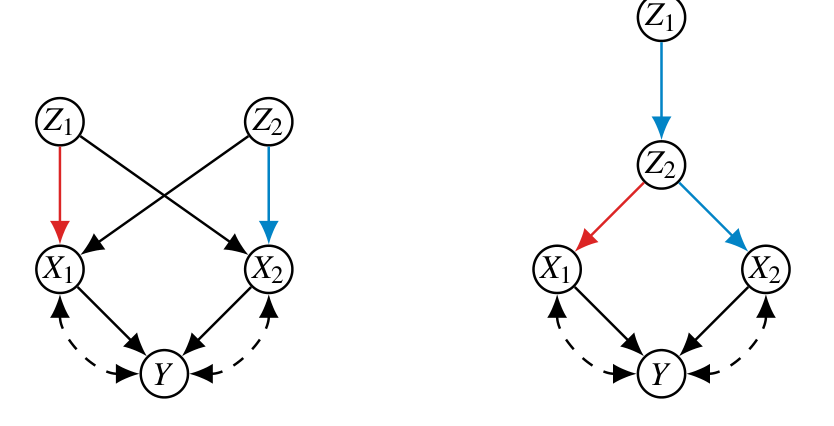
이러한 경로들은 최대유량(max-flow) 알고리즘으로 찾을 수 있습니다. 구체적으로는 각 \(Z_i\)를 소스(source), 각 \(X_j\)를 싱크(sink)로 두고 모든 간선과 정점에 단위 용량(unit capacity) 을 부여한 뒤 최대유량을 흘립니다. 유량이 \(|\mathbf{Z}|\)에 도달하면 그것이 곧 정점 서로소(vertex-disjoint) 경로들의 존재 증명이며, 따라서 비교차 경로로 이루어진 완전 매칭이 존재한다는 뜻입니다. 정점에 단위 용량을 주는 것이 핵심인데, 그래야 위 퇴화 예시처럼 여러 경로가 한 노드(\(Z_2\))를 함께 지나가는 상황이 유량 제약으로 자동 배제되기 때문입니다. 조합적 조건이 다항시간 알고리즘으로 바로 번역되는 지점입니다.
집합 \(\mathbf{Z}\)가 \(\mathbf{X} \subseteq \mathrm{Pa}(Y)\)에 대한 도구집합(IS)이려면:
- \(|\mathbf{Z}| = |\mathbf{X}| = n\);
- \(Z \in \mathbf{Z}\)는 어떤 \(X\)의 후손도 아니며;
- \(Z \in \mathbf{Z}\)에서 \(Y\)로 가는 모든 트렉은 어떤 \(X \in \mathbf{X}\)를 지나고;
- \(1 \le i < j \le n\)에 대해 \(Z_j\)는 트렉 \(p_i\)에 나타나지 않으며, 만약 트렉 \(p_i, p_j\)가 공통 변수 \(V\)를 가지면 \(p_i[V \sim Y]\)와 \(p_j[Z_j \sim V]\) 모두 \(V\)를 가리켜야 한다.
조건 1~3은 단일 IV 정의를 집합으로 옮긴 것에 가깝습니다 — 개수를 맞추고, 후손을 배제하고, 모든 통로가 \(\mathbf{X}\)를 거치게 합니다. 새로 등장한 것은 조건 4이고, 이것이 앞서 본 비교차 경로 요구를 형식화한 부분입니다.
4.5 도구 부분집합과 Match-Block (Instrumental Subsets)
때로는 \(Y\)의 부모 전체에 대한 완전한 도구집합이 존재하지 않습니다. 예컨대 \(X_3\)에 대응할 도구가 없는 경우, 전체 IS는 불가능하지만 부모의 부분집합 \(\{X_1, X_2\}\)에 대해서는 유효한 도구집합 \(\{Z_1, Z_2\}\)가 존재할 수 있습니다. 이를 도구 부분집합(instrumental subset, ISs) 이라 합니다. 문제는 어떤 부모가 부분집합에 속하는지 미리 모른다는 점, 그리고 이를 효율적으로 찾는 것입니다.
Match-Block 알고리즘 (Kumor et al. 2019)
여러 \(Z\)와 \(X\)가 얽힌 그래프에서 유효한 ISs를 찾는 절차는, §4.4에서 본 최대유량 판정을 반복적으로 적용해 후보를 좁혀 가는 것입니다.
- 모든 \(Z\)에서 모든 \(X\)로 최대유량을 실행합니다.
- 유량이 0인 \(X\)(예: \(X_4\))는 어떤 조상도 유효 IS에 속할 수 없으므로, 그 \(X\)와 관련 \(Z\)들(예: \(X_4, Z_5, Z_3\))을 비활성화합니다.
- 활성 노드에 대해 다시 최대유량을 실행하고, 같은 기준으로 노드를 제거합니다(예: \(X_3\) 비활성화).
- 최종 최대유량에서 남은 모든 \(X\)가 여전히 활성이면, 이들이 유효한 ISs 입니다(예: \(\{X_1, X_2, X_5\}\)).
5. 보조변수 기법 (The Method of Auxiliary Variables)
5.1 보조변수의 아이디어 (How to Solve This?)
조건화(conditioning)를 쓰지 않고 \(\lambda_{xy}\)를 풀 수 있을까요? 모형 \(Z \xrightarrow{\lambda_{zx}} X \xrightarrow{\lambda_{xy}} Y\), \(Z \leftrightarrow Y(\varepsilon_{zy})\)에서
\[ Z = E_z, \qquad X = \lambda_{zx} Z + E_x, \qquad Y = \lambda_{xy} X + E_y, \]
\(E_z, E_y\)가 상관되어 있어 뒷문 경로 \(X \leftarrow Z \leftrightarrow Y\)가 결과를 교란합니다(\(\sigma_{xy} = \lambda_{xy} + \lambda_{xz}\varepsilon_{zy}\)).
핵심 아이디어: 이미 풀어 둔 파라미터(\(\lambda_{zx}\))를 활용해 새로운 변수를 만들자. 보조변수(auxiliary variable) \(X^*\)를 다음과 같이 정의합니다.
\[ X^* = X - \lambda_{zx} Z = (\lambda_{zx} Z + E_x) - \lambda_{zx} Z = E_x. \]
이 \(X^*\)는 \(X\)에서 \(Z\)의 효과를 빼낸 잔차이며, 결과적으로 오차 \(E_x\) 그 자체입니다. \(E_x\)는 교란을 만드는 \(Z \leftrightarrow Y\) 경로와 무관한 반면 \(X\)와는 상관(\(\sigma_{x^*x}\))을 가지므로, 도구변수가 갖춰야 할 두 조건을 인공적으로 충족시킨 셈입니다.
이제 \(X^* = E_x\)는 교란 경로와 무관하므로, 도구변수(IV)처럼 사용할 수 있습니다.
\[ \lambda_{xy} = \frac{\sigma_{x^* y}}{\sigma_{x^* x}}. \]
즉 이미 알아낸 계수로 변수의 일부 효과를 “제거”하여 깨끗한 도구를 인공적으로 만들어내는 것이 보조변수 기법입니다.
5.2 보조변수 집합 (Auxiliary Variable Set, AV Set)
보조변수는 도구집합에도 활용됩니다. \(\{Z_1, Z_2\}\)가 \(\{X_1, X_2\}\)의 도구 후보이되 이들 위에 공통원인 \(W\)가 얹혀 있는 그래프를 생각해 봅시다. 이때는 \(Y\)로 가는 뒷문 경로 때문에 \(\lambda_{x_1 y}\)에 대한 IV/IS가 존재하지 않습니다.
- \(W\)가 \(Z_1, Z_2\)의 공통원인이라 뒷문 경로가 생깁니다.
- 그러나 간선 \(\lambda_{wz_1}, \lambda_{wz_2}\)는 식별 가능합니다.
- 이를 이용해 \(W\)의 효과를 제거한 보조변수 \(Z_1^* , Z_2^*\)를 만들면,
- \(\{Z_1^*, Z_2^*\}\)가 \(\{X_1, X_2\}\)에 대한 도구집합이 되어, \(Z_1^* \to X_1\), \(Z_2^* \to X_2\) 매칭으로 \(\lambda_{x_1 y}, \lambda_{x_2 y}\)를 식별할 수 있습니다.
6. 결론 (Conclusions)
- 선형 SCM은 실세계 응용에서 가장 흔히 쓰이는 인과모형입니다. 선형 가정 하나로 인과추론이 선형대수 문제로 환원됩니다.
- 회귀 분석은 조심해서 다루어야 하며, 그것이 실제로 무엇을 계산하는지(\(\beta = \sigma_{xy}\)) 항상 의식해야 합니다.
- 구조식은 회귀식과 같지 않지만, 올바른 그래프 아래에서는 회귀가 구조계수를 찾는 데 도움을 줄 수 있습니다(단일문·뒷문 기준).
- 인과 다이어그램을 적극 활용하면, 많은 실용적이고 일반적인 상황에서 IV·도구집합·보조변수 같은 그래프 기준으로 인과효과를 풀 수 있습니다.
부록 A. 선형 SCM에서 식별의 복잡도 (Appendix: Complexity of Identification in Linear SCMs)
지금까지 본 그래프 기준들은 강력하지만 완전(complete)하지 않습니다. 즉 “이 기준으로 못 찾는다”가 “식별 불가능하다”를 의미하지 않습니다. 그렇다면 그래프 기준이 놓치는 영역은 얼마나 넓고, 그곳을 다루는 비용은 얼마인가 — 이것이 부록의 질문입니다.
A.1 식별 방법들의 지형 (Landscape of Identification Methods)
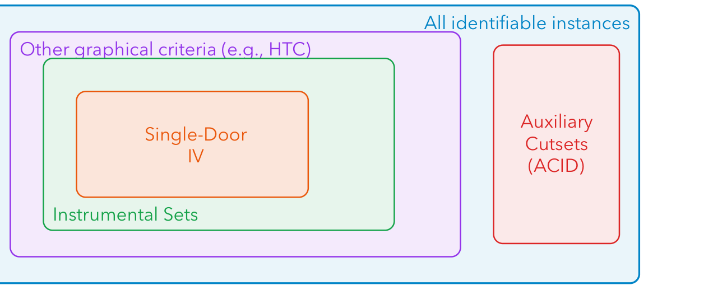
이 그림이 던지는 핵심 질문은 다음과 같습니다. 일반 식별 문제는 이 그래프 기준들보다 실제로 더 어려운가? 얼마나 어려운가?
A.2 그래프 기준의 한계 (The Limits of Graphical Criteria)
- 우리가 배운 그래프 기준들(단일문, IV, 도구집합 등)은 다항시간(polynomial time) 에 판정되지만, 식별 가능한 모든 사례를 풀지는 못합니다.
- 반대로 무차별 대입식 접근 — 컴퓨터 대수 / 그뢰브너 기저(Gröbner basis) — 은 모두 풀 수 있지만 이중 지수(doubly exponential) 시간이 걸립니다.
- 그 대가는 추상적인 수준이 아닙니다. 노드가 4개뿐인 그래프 하나를 그뢰브너 기저로 푸는 데 75일이 넘게 걸린 사례가 보고되어 있습니다(García-Puente, Spielvogel & Sullivant, UAI 2010; Bardet 2002).
A.3 최근의 복잡도 결과 (Recent Complexity Results)
Dörfler, van der Zander, Bläser & Liśkiewicz(NeurIPS 2024)는 이 간극의 크기를 처음으로 정량화했습니다.
- 일반 식별 문제는 증명 가능하게 어렵습니다 — NP보다 어렵습니다. 이진 변수가 아니라 실수값 미지수에 대해 추론해야 하기 때문입니다.
- 그럼에도 불구하고, 다항 공간(PSPACE) 안에서 풀 수 있습니다.
다항 공간이면 시간은 많아야 \(2^{\mathrm{poly}(n)}\) — 즉 단일 지수입니다. 그뢰브너 기저의 \(2^{2^{\mathrm{poly}(n)}}\)(이중 지수)과 비교하면 지수 하나가 통째로 사라지는 개선입니다. 실무적 함의는 명확합니다: 그래프 기준이 통하면 그것을 쓰고, 통하지 않으면 그 문제는 본질적으로 어렵다 — 다만 불가능하지는 않습니다.
부록 B. 역방향 그래프에서의 회귀 (Appendix: Regression with Reversed Graph)
§2.7에서 결과만 제시했던 왜곡된 회귀계수를 실제로 유도해 봅니다. 그래프는 \(X_1 \xleftarrow{b_1} Y \xrightarrow{b_2} X_2\), 즉 \(Y\)가 두 회귀변수의 공통원인인 경우입니다.
먼저 Wright 규칙으로 세 공분산을 구합니다.
\[ \sigma_{yx_1} = b_1, \qquad \sigma_{yx_2} = b_2, \qquad \sigma_{x_1x_2} = b_1 b_2. \]
앞의 둘은 간선 하나짜리 트렉이고, 세 번째는 \(X_1 \leftarrow Y \to X_2\)라는 트렉 하나를 따라간 계수 곱입니다. \(X_1\)과 \(X_2\) 사이에 간선이 없는데도 공분산이 0이 아니라는 것이 앞 절(콜라이더 구조)과의 결정적 차이입니다.
이제 다중회귀 \(Y = \beta_1 X_1 + \beta_2 X_2 + e\)의 정규방정식을 세웁니다. §2.10에서와 같은 방식으로 손실을 편미분해 0으로 놓으면 일반적으로
\[ \begin{cases} \sigma_{yx_1} = \beta_1 + \beta_2 \sigma_{x_1x_2} \\ \sigma_{yx_2} = \beta_2 + \beta_1 \sigma_{x_1x_2} \end{cases} \]
이고, 위에서 구한 값을 대입하면
\[ \begin{cases} b_1 = \beta_1 + \beta_2\, b_1 b_2 \\ b_2 = \beta_2 + \beta_1\, b_1 b_2 \end{cases} \]
가 됩니다. 두 식을 \(\beta_1, \beta_2\)에 대해 풀면 — 예컨대 둘째 식에서 \(\beta_2 = b_2 - \beta_1 b_1 b_2\)를 얻어 첫 식에 넣으면 \(b_1 = \beta_1 + (b_2 - \beta_1 b_1 b_2) b_1 b_2 = \beta_1(1 - b_1^2b_2^2) + b_1b_2^2\)이므로 —
\[ \beta_1 = \frac{b_1(1 - b_2^2)}{1 - b_1^2 b_2^2}, \qquad \beta_2 = \frac{b_2(1 - b_1^2)}{1 - b_1^2 b_2^2} \]
가 나옵니다. \(b_2 \neq 0\)인 한 \(\beta_1 \neq b_1\)이며, 단순회귀 \(r_{yx_1} = b_1\)과도 다릅니다. 같은 데이터, 같은 두 변수인데 함께 넣었다는 이유만으로 계수가 달라진다는 §2.7의 경고가 여기서 대수적으로 확인됩니다.
부록 C. 그뢰브너 기저 접근법 (Appendix: The Gröbner Basis Approach)
C.1 다항식 소거로서의 식별 (Identification as Polynomial Elimination)
Wright 규칙이 알려 주는 것은 결국 관측 공분산 \(\sigma_{ij}\)가 미지수 \(\lambda, \varepsilon\)의 다항식이라는 사실입니다. 그렇다면 식별을 다항 연립방정식을 푸는 문제로 곧장 다루면 어떨까요?
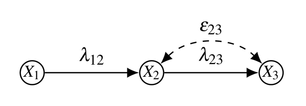
Wright 규칙을 적용하면 다음 세 식을 얻습니다.
\[ \sigma_{12} = \lambda_{12}, \qquad \sigma_{13} = \lambda_{12}\lambda_{23}, \qquad \sigma_{23} = \lambda_{23} + \varepsilon_{23}. \]
앞의 두 식으로부터 \(\lambda_{23} = \sigma_{13}/\sigma_{12}\)가 곧바로 나옵니다. 그러나 \(\sigma_{23}\) 하나만으로는 \(\lambda_{23}\)과 \(\varepsilon_{23}\)을 분리할 수 없습니다 — 다행히 이미 앞에서 \(\lambda_{23}\)을 얻었으므로 이 경우에는 문제가 되지 않지만, 일반적인 그래프에서 이런 “풀고 소거하기”의 순서를 사람이 찾는 것은 불가능에 가깝습니다. 그뢰브너 기저(Gröbner basis) 는 바로 이 과정을 임의의 그래프에 대해 자동화합니다.
C.2 그뢰브너 기저의 작동 방식 (Intuition)
- 설정: 각 변수쌍 \((i,j)\)에 대해 Wright 규칙이 주는 식을 \(\sigma_{ij} - (\lambda, \varepsilon \text{의 다항식}) = 0\) 꼴로 모두 적습니다.
- 소거: 소거 항순서(elimination term order) 를 사용해 원하지 않는 미지수를 체계적으로 제거하고, 목표 파라미터(예: \(\lambda_{xy}\))와 관측된 \(\sigma_{ij}\)만 남깁니다.
- 결과 판독:
- \(\lambda_{xy}\)에 대한 1차 다항식이 남으면 → 일반적으로 식별 가능(generically identifiable).
- \(d\)차 다항식이 남으면 → 대수적으로 \(d\)-식별(\(d\) possible values). 이는 유일 식별을 보장할 수도, 하지 않을 수도 있습니다(§3.4의 유한 식별에 대응).
- 결과에 \(\lambda_{xy}\)가 아예 나타나지 않으면 → 일반적으로 식별 불가능.
C.3 계산 결과: 3개 및 4개 노드 (Computational Results)
García-Puente et al.(2010)은 3개·4개 노드 위의 모든 선형 SCM을 전수 검사했습니다.
| 구분 | 3개 노드 (\(2^6 = 64\)) | 4개 노드 (\(2^{12} = 4096\)) |
|---|---|---|
| 일반적으로 식별 가능 | 22 | 1,246 |
| 일반적으로 식별 불가능 | 42 | 2,844 |
| 그중 대수적으로 \(k\)-식별 | 0 | 6 |
| 단일문 / IV로 해결됨 | 22 / 22 | 1,093 / 1,246 |
| 그뢰브너 기저로만 해결됨 | 0 | 153 |
- 노드가 3개 이하이면 그래프 기준만으로 충분합니다 — 식별 가능한 22개를 단일문과 IV가 전부 잡아냅니다.
- 노드가 4개가 되는 순간 153개 사례가 대수적 방법을 요구합니다. 부록 A의 “여백”이 이 숫자로 처음 드러나는 셈입니다.
- 실행시간의 편차는 극단적입니다. 같은 4-노드 그래프라도 몇 초에서 75일 이상까지 걸립니다.
정리하며 (Closing Remarks)
이번 강의의 논증 사슬을 단계별로 압축하면 다음과 같습니다.
| 단계 | 내용 | 근거 |
|---|---|---|
| ① 가정 추가 | 구조 함수를 선형으로 두면 \(V_i \leftarrow \sum_j \lambda_{ji}V_j + E_i\)가 되고, 인과효과가 곧 구조계수 \(\lambda\)가 된다 | \(\mathbb{E}[Y \mid do(X=x)] = \lambda x\) (§1.5) |
| ② 관측과 미관측의 연결 | 공분산은 그래프 위 모든 트렉을 따라간 계수 곱의 합으로 분해된다 | Wright의 규칙, 1921 (§1.10) |
| ③ 문제의 재정식화 | 식별이란 관측 가능한 \(\sigma\)의 다항식으로 미관측 \(\lambda\)를 푸는 일이다 | \(\Sigma = \Sigma(\lambda, \varepsilon)\) (§3.1) |
| ④ 회귀의 정체 규명 | 최소제곱의 해는 \(\beta = \sigma_{xy}\)일 뿐이며, 인과적 주장을 담고 있지 않다 | 손실 미분 (§2.4–2.5) |
| ⑤ 회귀의 구제 조건 | 간선을 지운 \(G_\lambda\)에서 d-분리하는 \(Z\)를 통제하면 직접효과가, 나가는 화살을 지운 \(G_{\underline{X}}\)에서 d-분리하는 \(Z\)를 통제하면 총효과가 회복된다 | 단일문 · 뒷문 기준 (§2.10–2.11) |
| ⑥ 회귀가 실패할 때 | 조건화 대신 외부 변동원(\(Z\))을 지렛대로 쓴다 | IV, 조건부 IV (§4.1–4.3) |
| ⑦ 도구가 하나로 부족할 때 | 도구를 집합으로 확장하되, 서로 교차하지 않는 경로로 완전 매칭이 되어야 한다 | 도구집합 · 최대유량 (§4.4) |
| ⑧ 도구가 아예 없을 때 | 이미 푼 계수로 교란 성분을 빼낸 잔차를 인공 도구로 만든다 | 보조변수 \(X^* = X - \lambda_{zx}Z\) (§5) |
| ⑨ 한계의 정량화 | 그래프 기준은 다항시간이되 불완전하고, 완전한 대수적 방법은 이중 지수 시간이며, 일반 문제는 NP-hard 이상이되 PSPACE 안에 있다 | García-Puente et al. 2010; Dörfler et al. 2024 (부록 A·C) |
개인적인 감상 몇 가지를 덧붙입니다.
가장 인상적인 지점은 Wright의 규칙이 수행하는 번역입니다. 그 자체로는 “공분산 = 경로 곱의 합”이라는 소박한 항등식이지만, 이것이 있기에 그래프의 조합적 성질(경로가 교차하는가, d-분리되는가)과 방정식의 대수적 성질(완전계수인가, 소거 가능한가)이 정확히 맞물립니다. §4.4에서 “비퇴화 ⟺ 비교차 완전 매칭”이 필요충분조건으로 성립하고, 그것이 곧바로 최대유량이라는 다항시간 알고리즘으로 번역되는 장면이 이 번역의 위력을 가장 잘 보여 줍니다. 인과추론이 그래프 이론의 문제가 되는 순간입니다.
강의 설계에서 가장 정직한 선택은 §2.9였습니다. 회귀에 변수를 더 넣었더니 오히려 편향이 커지고, 더 적게 넣은 쪽이 정답을 주는 예시를 세 줄 나란히 보여 주는 방식은 “통제할 수 있는 건 다 통제하라”는 실무의 기본값을 반례 하나로 무너뜨립니다. 선형이라는 가장 단순한 세팅에서 이 반례가 나온다는 점이 중요합니다 — 비선형성이나 이질적 효과 같은 복잡한 요인 없이도, 오직 그래프 구조만으로 이런 일이 벌어지기 때문입니다.
개념적으로 가장 아름다운 것은 보조변수 기법입니다. “도구가 없으면 만들면 된다”는 발상 자체도 대담하지만, 그 재료가 이미 식별해 둔 계수라는 점이 핵심입니다. 식별이 한 번에 끝나는 판정이 아니라 순차적으로 자기 자신을 부트스트랩하는 과정이라는 관점으로 옮겨 가는 것이며, §3.6에서 “먼저 풀리는 것부터 대입한다”고 말한 연쇄가 여기서 가장 극적인 형태로 나타납니다.
실용적 한계도 정직하게 남습니다. 첫째, 이 모든 논의의 출발점은 그래프가 주어졌다는 가정입니다. §2.7의 두 그림 — 화살촉 방향만 뒤집힌 두 그래프 — 은 관측 데이터만으로 구별되지 않는데도 회귀 결과의 해석은 정반대입니다. 식별 이론이 정교해질수록 그래프 자체의 오설정에 대한 취약성은 오히려 커집니다. 둘째, 정규성과 표준화는 편의를 위한 가정이라 하지만, 정규성 덕분에 “분포 = 공분산 행렬”이 성립해 모든 논의가 \(\Sigma\) 하나로 환원되는 것이므로 결코 가볍지 않습니다. 셋째, 부록 A가 보여 주듯 그래프 기준들은 여전히 불완전합니다 — 노드 4개짜리 그래프에서 이미 153개 사례가 대수적 방법을 요구한다는 숫자는, 우리가 배운 도구들이 다루는 영역이 생각보다 좁을 수 있음을 냉정하게 알려 줍니다.